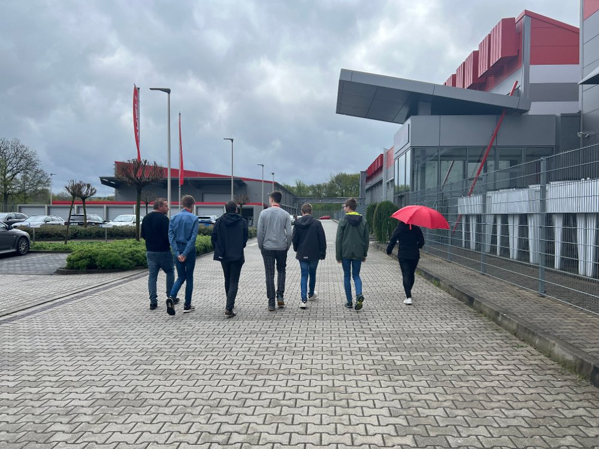

Das Projekt
Über uns
Das Internet ist voller Informationen, aber nicht alles, was wir lesen oder sehen, entspricht der Wahrheit. Zwischen echten Nachrichten, Meinungen und gezielten Falschmeldungen verschwimmen die Grenzen oft. Genau hier setzt HateFake an.

Entwickelt wurde HateFake von der Informatik-AG des Gymnasiums Markneukirchen. Wir sind eine Gruppe von Schülerinnen und Schülern, die sich nicht damit zufriedengeben wollten, nur über Fake News zu reden. Stattdessen wollten wir etwas schaffen, das wirklich verändert, wie junge Menschen Informationen wahrnehmen. Aus dieser Idee entstand eine Website, die Bildung, Technik und gesellschaftliches Bewusstsein miteinander verbindet, ganz klar mit dem Fokus auf die heutigen Möglichkeiten mit KI (=künstliche Intelligenz).
Denn wir glauben: Wer kritisch denkt, lässt sich nicht so leicht täuschen. Und wer die Mechanismen hinter Fake News versteht, kann helfen, das Internet zu einem besseren Ort zu machen.